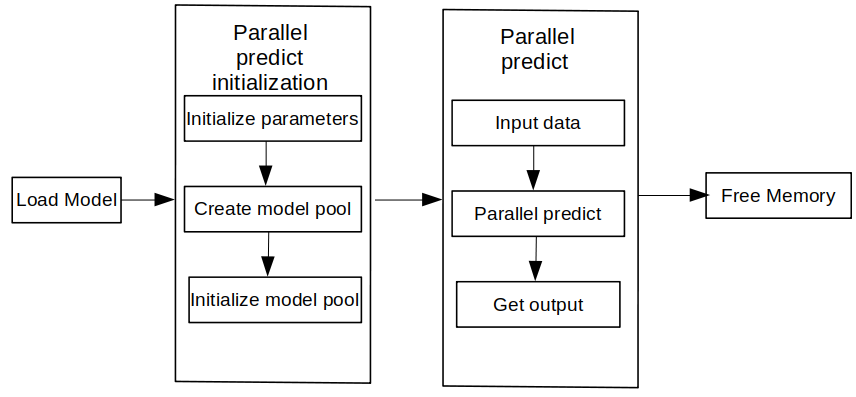

Using C++ Interface to Perform Concurrent Inference¶

Overview¶
MindSpore Lite provides multi-model concurrent inference interface ModelParallelRunner. Multi model concurrent inference now supports Ascend 310/310P/910, Nvidia GPU and CPU backends.
After exporting the mindir model by MindSpore or converting it by model conversion tool to obtain the mindir model, the concurrent inference process of the model can be executed in Runtime. This tutorial describes how to perform concurrent inference with multiple modes by using the C++ interface.
To use the MindSpore Lite concurrent inference framework, perform the following steps:
Create a configuration item: Create a multi-model concurrent inference configuration item RunnerConfig, which is used to configure multiple model concurrency.
Initialization: initialization before multi-model concurrent inference.
Execute concurrent inference: Use the Predict interface of ModelParallelRunner to perform concurrent inference on multiple models.
Release memory: When you do not need to use the MindSpore Lite concurrent inference framework, you need to release the ModelParallelRunner and related Tensors you created.

Preparation¶
The following code samples are from Sample code for performing cloud-side inference by C++ interface.
Export the MindIR model via MindSpore, or get the MindIR model by converting it with model conversion tool and copy it to the
mindspore/lite/examples/cloud_infer/quick_start_parallel_cpp/modeldirectory, and you can download the MobileNetV2 model file mobilenetv2.mindir.Download the Ascend, Nvidia GPU, CPU triplet MindSpore Lite cloud-side inference package
mindspore- lite-{version}-linux-{arch}.tar.gzand save it tomindspore/lite/examples/cloud_infer/quick_start_parallel_cppdirectory.
Create configuration¶
The configuration item will save some basic configuration parameters required for concurrent inference, which are used to guide the number of concurrent models, model compilation and model execution.
The following sample code from main.cc demonstrates how to create a RunnerConfig and configure the number of workers for concurrent inference:
// Create and init context, add CPU device info
auto context = std::make_shared<mindspore::Context>();
if (context == nullptr) {
std::cerr << "New context failed." << std::endl;
return -1;
}
auto &device_list = context->MutableDeviceInfo();
auto device_info = std::make_shared<mindspore::CPUDeviceInfo>();
if (device_info == nullptr) {
std::cerr << "New CPUDeviceInfo failed." << std::endl;
return -1;
}
device_list.push_back(device_info);
// Create model
auto model_runner = new (std::nothrow) mindspore::ModelParallelRunner();
if (model_runner == nullptr) {
std::cerr << "New Model failed." << std::endl;
return -1;
}
auto runner_config = std::make_shared<mindspore::RunnerConfig>();
if (runner_config == nullptr) {
std::cerr << "runner config is nullptr." << std::endl;
return -1;
}
runner_config->SetContext(context);
runner_config->SetWorkersNum(kNumWorkers);
For details on the configuration method of Context, see Context.
Multi-model concurrent inference currently only supports CPUDeviceInfo, GPUDeviceInfo, and AscendDeviceInfo several different hardware backends. When setting the GPU backend, you need to set the GPU backend first and then the CPU backend, otherwise it will report an error and exit.
Multi-model concurrent inference does not support FP32-type data inference. Binding cores only supports no core binding or binding large cores. It does not support the parameter settings of the bound cores, and does not support configuring the binding core list.
For large models, when using the model buffer to load and compile, you need to set the path of the weight file separately, sets the model path through SetConfigInfo interface, where
sectionismodel_File,keyismindir_path; When using the model path to load and compile, you do not need to set other parameters. The weight parameters will be automatically read.
Initialization¶
When using MindSpore Lite to execute concurrent inference, ModelParallelRunner is the main entry of concurrent inference. Through ModelParallelRunner, you can initialize and execute concurrent inference. Use the RunnerConfig created in the previous step and call the init interface of ModelParallelRunner to initialize ModelParallelRunner.
// Build model
auto build_ret = model_runner->Init(model_path, runner_config);
if (build_ret != mindspore::kSuccess) {
delete model_runner;
std::cerr << "Build model error " << build_ret << std::endl;
return -1;
}
For Initialization of ModelParallelRunner, you do not need to set the RunnerConfig configuration parameters, and the default parameters will be used for concurrent inference of multiple models.
Executing Concurrent Inference¶
MindSpore Lite calls the Predict interface of ModelParallelRunner for model concurrent inference.
// Model Predict
auto predict_ret = model_runner->Predict(inputs, &outputs);
if (predict_ret != mindspore::kSuccess) {
delete model_runner;
std::cerr << "Predict error " << predict_ret << std::endl;
return -1;
}
It is recommended to use GetInputs and GetOutputs to obtain the inputs and outputs of the Predict interface. Users can set the memory address of the data and Shape-related information through SetData.
Memory Release¶
When you do not need to use the MindSpore Lite inference framework, you need to release the created ModelParallelRunner.
// Delete model runner.
delete model_runner;